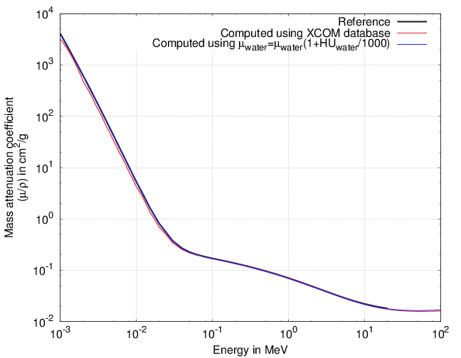
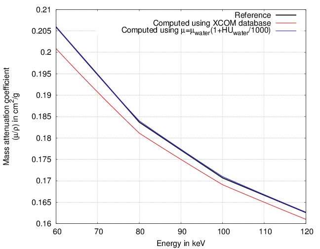
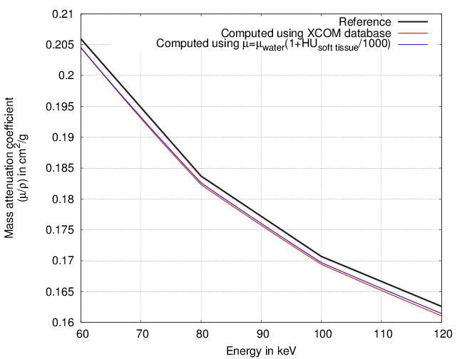
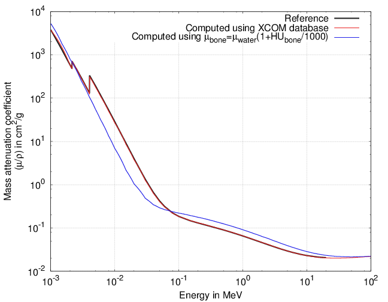
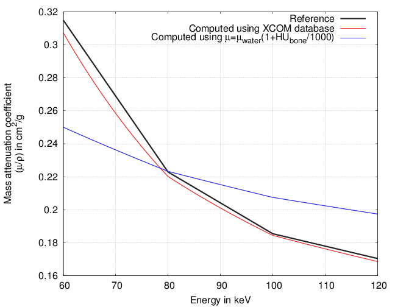

| Energy: | 80 keV | |
| Mass Attenuation Coefficient: | μwater/ρwater: | 1.837E-01 cm2/g |
| Density: | ρwater: | 1.000E+00 g/cm3 |
| Linear Attenuation Coefficient: | μwater: | (μwater/ρwater) * ρwater |
| 1.837E-01 * 1.000E+00 | ||
| 1.837E-01 cm-1 | ||
| Hounsfield Unit | HUwater: | ((μwater - μwater) / μwater) * 1000 |
| ((1.837E-01 - 1.837E-01) / 1.837E-01) * 1000 | ||
| 0 |



| Energy: | 80 keV | |
| Mass Attenuation Coefficient: | μsoft tissue/ρsoft tissue: | 1.823E-01 cm2/g |
| Density: | ρsoft tissue: | 1.060E+00 g/cm3 |
| Linear Attenuation Coefficient: | μsoft tissue: | (μsoft tissue/ρsoft tissue) * ρsoft tissue |
| 1.823E-01 * 1.060E+00 | ||
| 1.93E-01 cm-1 | ||
| Hounsfield Unit | HUsoft tissue: | ((μsoft tissue - μwater) / μwater) * 1000 |
| ((1.93E-01 - 1.837E-01) / 1.837E-01) * 1000 | ||
| 51.9216113228 |



| Energy: | 80 keV | |
| Mass Attenuation Coefficient: | μbone/ρbone: | 2.229E-01 cm2/g |
| Density: | ρbone: | 1.920E+00 g/cm3 |
| Linear Attenuation Coefficient: | μbone: | (μbone/ρbone) * ρbone |
| 2.229E-01 * 1.920E+00 | ||
| 4.28E-01 cm-1 | ||
| Hounsfield Unit | HUbone: | ((μbone - μwater) / μwater) * 1000 |
| ((4.28E-01 - 1.837E-01) / 1.837E-01) * 1000 | ||
| 1329.8856831791 |



| Energy: | 80 keV | |
| Mass Attenuation Coefficient: | μlung/ρlung: | 1.826E-01 cm2/g |
| Density: | ρlung: | 1.050E+00 g/cm3 |
| Linear Attenuation Coefficient: | μlung: | (μlung/ρlung) * ρlung |
| 1.826E-01*1.050E+00 | ||
| 1.9173-01 cm-1 | ||
| Hounsfield Unit | HUlung: | ((μlung - μwater) / μwater) * 1000 |
| ((1.9173-01 - 1.837E-01) / 1.837E-01) * 1000 | ||
| 1329.8856831791 |